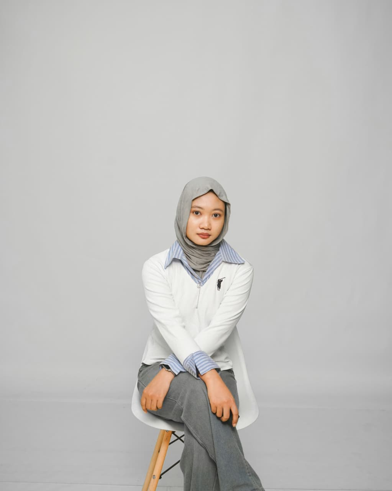
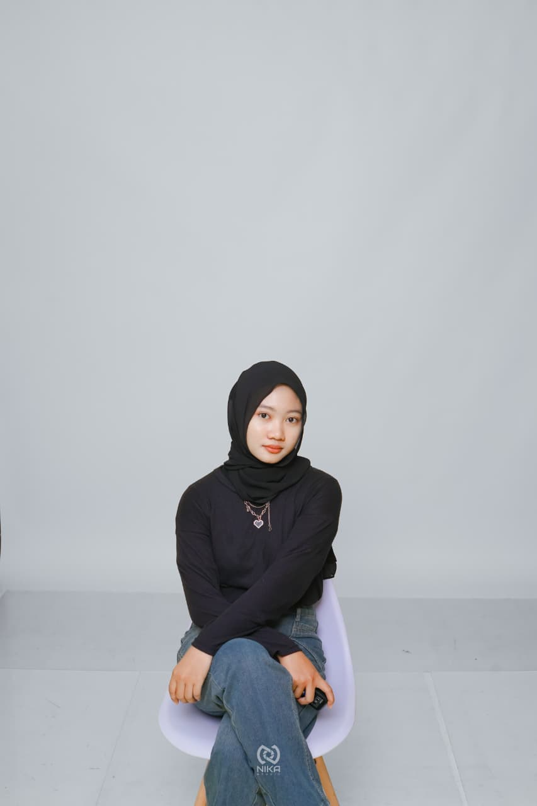
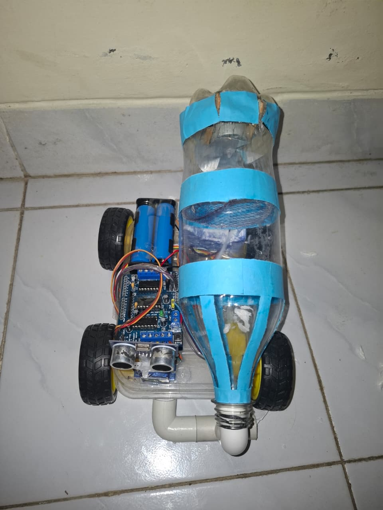
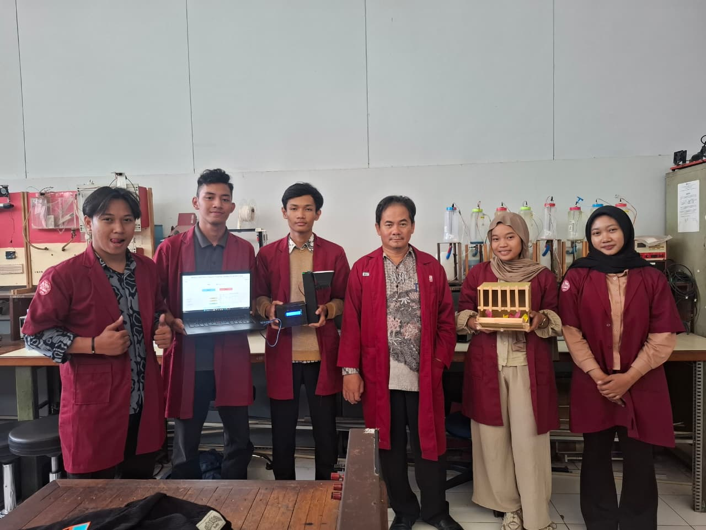
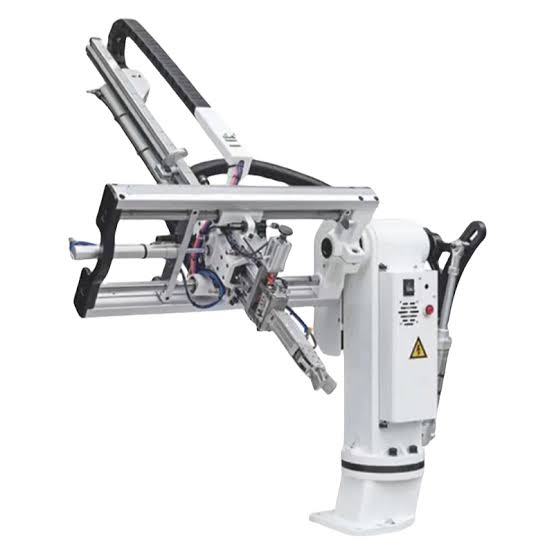
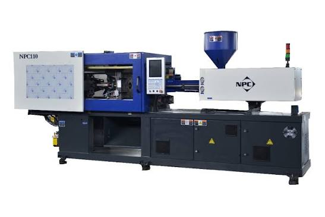

ELECTRONICS ENGINEERING
Industrial Automation & Control Systems
Seorang individu yang bermotivasi tinggi dan berorientasi pada detail dengan ketertarikan kuat pada otomasi industri dan sistem kendali. Memiliki pengalaman praktis dalam troubleshooting mesin industri, pemeliharaan PLC, serta pengembangan proyek sistem kontrol.


Politeknik Negeri Semarang
Mempelajari elektronika industri, sistem kendali, PLC, mikrokontroler, instrumentasi, dan otomasi industri.
MA Salafiyah Kajen
Mempelajari dasar matematika, fisika, dan ilmu pengetahuan alam sebagai fondasi studi teknik.
CV. Jaya Setya Plastik
Melakukan perawatan berkala dan troubleshooting pada mesin industri produksi. Melakukan pengecekan dan perbaikan PLC, driver, sensor, serta perangkat pendukung. Terlibat dalam pengembangan proyek Robot Power Control dan Heater Monitoring System.
PT. Indomaker Indonesia Mandiri
Mengikuti pelatihan perancangan skematik PCB, routing jalur PCB, hingga proses manufaktur menggunakan Eagle Software.

Robot penyedot debu otomatis yang mampu bergerak secara mandiri dengan memanfaatkan sensor ultrasonik untuk mendeteksi dan menghindari rintangan.

Sistem pemberian pakan otomatis menggunakan Arduino Uno dan MATLAB GUI dengan mode manual dan otomatis berbasis sensor LDR.


Proyek pengembangan sistem kendali daya robot dan monitoring heater pada mesin industri untuk meningkatkan efisiensi dan keandalan operasional.
📧 upikindriani391@gmail.com
📱 082324734691
📍 Pati, Jawa Tengah, Indonesia